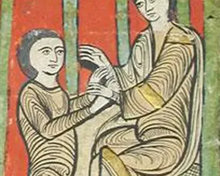

Presentació
Pantalles per tocar: qui decideix a l'escola, el gravat de les Corts amb punts, cartes dels mals usos, la màquina de vot de les Corts, la línia del temps 1348–1486, «llibertat comprada?» i el constructor del memorial.
Els remences, les Corts i nosaltres (1348–1486 → avui). A les Corts catalanes del segle XV hi seien el rei, l'Església, els nobles i les ciutats. Els pagesos de remença, que eren gran part de la Catalunya Vella, no hi tenien cap seient. Tot i això, en cent quaranta anys es van organitzar, van negociar i es van revoltar fins que els mals usos es van abolir. L'alumnat reviu aquest conflicte des de dins i després fa servir el que ha après per demanar veu en una decisió que l'afecta avui.
Com es guanya una veu quan no tens seient on es decideix?
ContextA l'escola i al barri es prenen moltes decisions que afecten els adolescents: horaris, normes del mòbil, espais del pati, festes, transport, parcs. Sovint les prenen persones adultes sense preguntar-los res. Fa cinc-cents anys passava una cosa semblant, però molt més dura: els pagesos de remença estaven lligats al mas, pagaven els mals usos i no tenien representació a les Corts on es feien les lleis. Tot i això, van aconseguir canviar-les.
RepteCom a remences, escriviu un memorial de greuges i defenseu-lo a les Corts de l'aula, on només voten els tres braços. Després, com a alumnes de 2n, escriviu un memorial de greuges de 2026 sobre una decisió que us afecta i en què no teniu veu, i el presenteu a qui la pot canviar: el consell de delegats, el consell escolar o el consell d'adolescents del municipi, si n'hi ha.
Pregunta del text inicial i del text final«Quan algú no té veu on es decideix el que l'afecta, què pot fer? És just desobeir?» Cada alumne la respon el primer dia, sense ajuda. L'últim dia la torna a respondre i compara els dos textos.
L'alumnat només veu la presentació a la pantalla tàctil, el seu full i el dossier del seu rol. Els dossiers es retallen i es reparteixen la segona sessió.
Pantalles per tocar: qui decideix a l'escola, el gravat de les Corts amb punts, cartes dels mals usos, la màquina de vot de les Corts, la línia del temps 1348–1486, «llibertat comprada?» i el constructor del memorial.

Quatre pàgines (dues a acollida) que acompanyen les quatre sessions. Comencen amb l'objectiu i el text inicial i acaben amb el text final, la comparació i la metacognició.

Sis rols amb interessos, arguments i una carta secreta: remences moderats, remences radicals, braç militar, braç eclesiàstic, braç reial i el rei. Inclou les normes de la sessió i l'acta de votació.
Quatre sessions d'una hora. Les dues primeres són per entendre qui no tenia veu i per sentir-ho a la pell; la tercera, per contrastar-ho amb la història i triar un greuge actual; la quarta, per escriure i presentar el memorial. Només es llegeixen dues fonts i es juga una sola simulació.
| Sessió | Què es fa | Presentació | Full |
|---|---|---|---|
| 1 · Dt 12:00 | Inicial Qui decideix aquí? Per què es queixaven? Situem sis decisions de l'escola a l'escala «decideixo jo → decideixen per mi». Text inicial individual (10 min). Lectura del gravat de les Corts: qui hi és i qui no hi és. Presentació del repte i dels criteris. Per acabar, la font de Pere Albert i el mapa de la Catalunya Vella: què vol dir ser «home del senyor». | 1–5 | Ex. 1–4 · text inicial |
| 2 · Dc 11:00 | Desenvolupament Les Corts de l'aula. Les sis cartes dels mals usos: a qui afecta cadascun (dues afecten sobretot les dones). Grups d'experts: cada grup rep un dossier de rol i prepara la seva posició (12 min). Sessió imaginada de Corts a mitjan segle XV: només voten els tres braços i el rei sanciona. Els remences no tenen seient: han de trobar aliats en la pausa de negociació. Votació final i debat de com s'han sentit. | 6–8 | Ex. 5–6 · acta del meu rol |
| 3 · Dv 11:00 | Estructuració Què va passar de debò? I avui? Línia del temps de 1348 a 1486: Pesta Negra, sindicat remença, dues guerres i la Sentència de Guadalupe. Debat «Llibertat comprada?». Memorial remença individual de vuit línies com a tiquet de sortida. Els darrers 10 minuts, ja en grup: «Qui no té veu avui?», pluja de greuges de l'escola o del barri i triatge amb criteris (afecta molta gent, és concret, algú ho pot canviar). Cada grup en tria un. | 9–11 | Ex. 7–9 · memorial remença · inici de l'ex. 10 |
| 4 · Setmana 2 | Aplicació Escrivim el memorial 2026 i el presentem. Greuge, prova, petició i aliats, amb el constructor de la pantalla (20 min). Revisió creuada entre grups amb la mateixa rúbrica que farà servir la docent. Un portaveu per grup el presenta al consell de delegats (o a qui toqui). Cada alumne escriu el text final, el compara amb l'inicial i fa la metacognició. | 12–13 | Ex. 10 acabat · ex. 11 · text final i metacognició |
Entre la sessió 3 i la 4: cada grup busca una prova del seu greuge (una enquesta curta al curs, la normativa, una foto), al pati o a tutoria. I cal parlar amb la coordinació o la tutoria perquè el consell de delegats (o el consell escolar) reculli els memorials i hi doni resposta. Si el repte acaba sense resposta, l'alumnat aprèn el contrari del que volem. La sessió 4 és densa: si el temps aprieta, la presentació i el text final passen als primers minuts de la classe següent.
Concreció dels criteris del currículum per a aquesta situació. Capacitat + saber + finalitat, i com sabrem que s'ha après.
| Objectiu d'aprenentatge | Ho sabrem si l'alumne… |
|---|---|
| 1. Analitzar com s'organitzava el poder a la Catalunya baixmedieval (rei, Corts i braços) per identificar qui prenia les decisions i qui en quedava exclòs. |
|
| 2. Explicar les causes i les conseqüències del conflicte remença (1348–1486) per entendre com un col·lectiu exclòs va transformar les lleis. |
|
| 3. Argumentar en un debat i en un memorial escrit, des d'un rol i des de la seva pròpia veu, per defensar demandes amb proves i solucions dialogades. |
|
| 4. Comparar la manera com es decideix ara i a l'edat mitjana per valorar la participació democràtica i fer-la servir en el seu entorn. |
|
Totes les versions tenen les mateixes fonts, la mateixa pregunta i el mateix memorial. Canvia quanta ajuda escrita hi ha. La versió A té les mateixes quatre pàgines que la B: l'exigència és a la pregunta i els criteris són escrits al full.
Les mesures universals arriben a tot el grup. Les addicionals es fan servir quan cal, sense treure ningú de la tasca comuna: tothom té un rol a les Corts i tothom signa el memorial.
Fonts en imatge, text i veu. Grups d'experts heterogenis amb rols de treball (portaveu, secretari, cercador de proves, cronometrador). Es pot argumentar parlant, escrivint o amb les cartes de vot. L'objectiu és visible al principi i es revisa al final.
Banc de paraules, opcions per marcar i frases començades. El memorial té les quatre caixes amb un exemple fet. Al debat, un argument del dossier ja escrit per llegir.
Interrogar les fonts (qui va escriure la sentència i per a qui), cadena causal 1348–1486 amb un contrafactual, la mirada interseccional (dona i remença) i un contraargument al memorial. Repte extra: buscar el castell o el mas remença més proper i explicar-ne la història.
Glossari de 10 paraules amb imatge, en sis llengües i la seva. A les Corts té un rol amb cartes (sí, no, vull parlar) i pot dir l'argument en la seva llengua a un company que el tradueix. Al memorial 2026, pot fer el greuge dibuixat.
 senyor
senyor pagès
pagès
pacteAvançar l'estructura de la simulació amb l'agenda de les Corts (escrita al dossier). Rol amb guió clar (per exemple, secretari de l'acta). Avisar abans de la votació i del debat sobre com s'han sentit. Sense sorpreses a la pantalla, que respecta «reduir moviment».
Rols amb moviment (portaveu, ujier que porta els missatges entre braços). Temps marcats a la pantalla per a cada torn. Una tasca visible cada vegada: el full es pot donar pàgina a pàgina.
Avaluació formativa al llarg de la situació: acta del rol (sessió 2), memorial remença individual (sessió 3) i memorial 2026 amb revisió entre grups (sessió 4). L'avaluació final és el memorial 2026 i la comparació del text inicial amb el final. La metacognició no puntua.
Text literal del currículum: Decret 175/2022, annex 3, Ciències socials: geografia i història. Criteris de 1r i 2n d'ESO.
Indagar i argumentar a partir de problemes socials rellevants, locals i globals, per desenvolupar un pensament crític i respectuós amb les diferències, que contribueixi a la construcció de la identitat individual i col·lectiva i a la consecució d'un present i un futur més just i inclusiu.
Interpretar els canvis i les continuïtats dels processos històrics, mitjançant la realització de projectes d'investigació i l'ús de fonts primàries i secundàries, per interpretar els problemes del món actual i fer propostes a favor de la pau, el benestar i el desenvolupament sostenible.
Analitzar de forma crítica els mecanismes que han regulat la vida de les societats al llarg de la història fins a l'actualitat i la construcció dels sistemes democràtics per participar de manera respectuosa i compromesa en activitats comunitàries que promoguin la convivència, la cohesió social i l'equitat.
Interpretar els processos que han conformat les societats actuals en la seva diversitat i riquesa a partir de l'anàlisi de perspectives i mirades diverses per formar-se un criteri propi fonamentat i comprometre's en la defensa dels drets humans, la llibertat i la igualtat davant les situacions d'injustícia i discriminació.
Orientacions curriculars Ciències Socials: Geografia i Història, sabers per cursos. [ESS] = saber essencial.
Criteris de 1r i 2n d'ESO de les competències transversals (Decret 175/2022), en text literal.
2.2 Participar activament en l'organització i desenvolupament de projectes de l'entorn que integrin la capacitat per treballar en equip, la presa de decisions consensuades, la comunicació efectiva i la resolució de problemes.
3.3 Identificar les causes que han relegat les dones i altres col·lectius i minories a un rol secundari al llarg de la història i en el present, rebutjant actituds discriminatòries i per posar en valor la importància de la cura de les persones.
3.2 Emprar estratègies de treball cooperatiu, complint els acords, prioritzant l'objectiu de l'equip i valorant les aportacions del grup amb respecte i responsabilitat.
4.1 Argumentar de forma constructiva, amb ajuda si escau, sobre les fortaleses i les debilitats pròpies mitjançant l'ús d'estratègies d'autoavaluació i coavaluació.
La sessió de Corts de l'aula és imaginada: barreja interessos reals de la meitat del segle XV en una sola sessió. Cal dir-ho a l'alumnat i contrastar-ho a la sessió 4. Per al pont amb el present: a l'Estat espanyol es vota als 18 anys, i les persones estrangeres de la UE i d'alguns països amb conveni només voten a les municipals. Al centre, l'alumnat té representants al consell escolar.
Totes de Wikimedia Commons. Els textos de Pere Albert i de la Sentència de Guadalupe són adaptacions per a l'aula, no citacions literals, excepte quan es marca «text original».